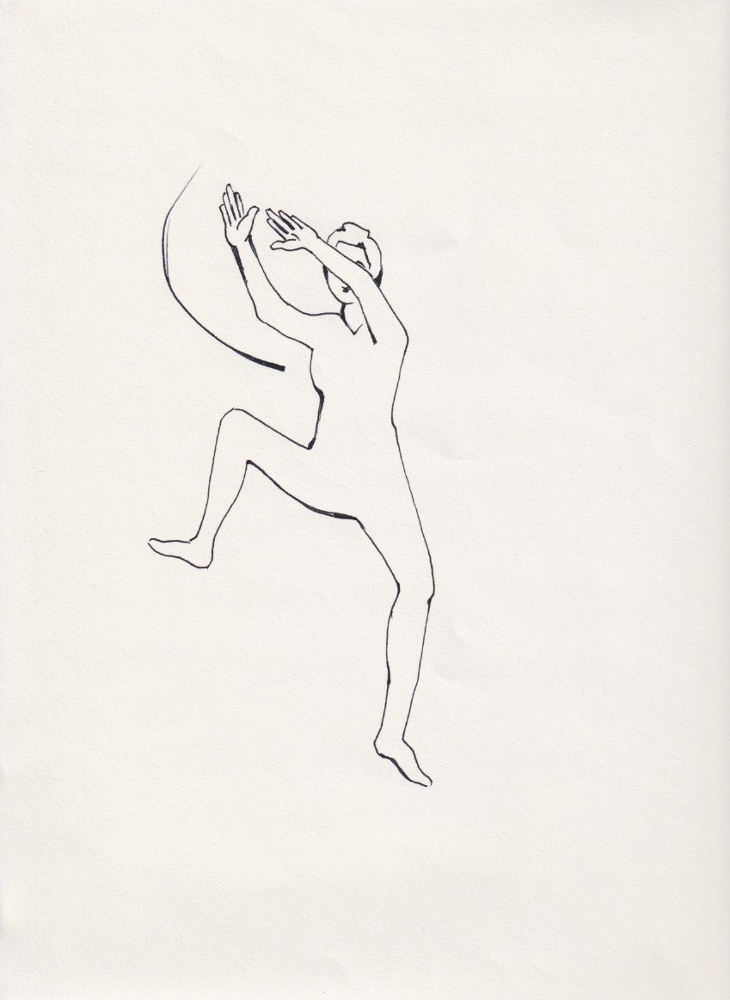

SUGERENCIA SANADORA
Qì Gōng
La ciencia infusa hecha por el grupo, utilizando como intención el “instinto a la vida”, ha revelado dos piezas fundamentales en nuestro camino de investigación:
La imagen del símbolo Gamma del alfabeto griego.
La definición de instinto a la vida, resultado de la síntesis y armonización de ideas e imágenes recibidas durante este proceso: “Un movimiento desde el vacío, fuerte, oscuro, circular, con dirección... ¡Ahí hay Luz!”.
El instinto a la vida es un movimiento desde el vacío, fuerte, oscuro, circular, con dirección en el que la luz está presente, su síntesis gráfica es el símbolo de la letra griega Gamma. A partir de estos conceptos comenzamos a desarrollar la idea de que este símbolo podría convertirse en un movimiento energético a realizar con el cuerpo, con el fin de ir desde el plano de las ideas al plano de la forma.
Los tres niveles de comunicación y el símbolo Gamma:
En el momento en que el grupo centró su atención en el miedo a la comunicación y a la comunicación en sí, todo el estudio realizado sobre el movimiento Gamma comenzó a aparecer bajo una luz diferente aumentando y enriqueciendo su significado.
Imaginando el símbolo Gamma superpuesto a la silueta del cuerpo humano es posible localizar tres partes del símbolo, correspondientes a tres lugares del cuerpo que pueden combinarse a su vez con tres “tipos” de comunicación:
Parte superior del símbolo, líneas abiertas hacia el infinito, correspondiente a la parte sobre nuestra cabeza, NIVEL CELESTE, COMUNICACIÓN CON LA CREACIÓN.
Parte central del símbolo donde se cruzan las líneas, correspondiente al 17 RM Shān Zhōng, “Centro de la Sinceridad”, “Centro del Pecho”.1 NIVEL HUMANO, COMUNICACIÓN HUMANA –con uno mismo y con los otros-.
Parte curva, más baja del símbolo, correspondiente al Dāntián Inferior, útero, NIVEL TERRESTRE COMUNICACIÓN CON LA TIERRA –entorno en el que nos encontramos-.
Para que un ser se mueva sobre este plano de manera funcional, pensamos que es necesario que los tres niveles de comunicación antes citados sean perfectamente activos y funcionales, y que sean armoniosos entre sí.
El Qì Gōng del movimiento Gamma tiene como intención el despertar, purificar estos tres niveles en el ser humano y ponerlos en comunicación entre sí, dando al individuo un recurso para aprender a comunicarnos mejor, de manera saludable.
A continuación, explicaremos el movimiento completo combinado con una respiración abdominal con pausas entre la inspiración y la espiración:
Qì Gōng del movimiento Gamma:
Nos disponemos de la siguiente forma: Abrimos las piernas con las rodillas levemente flexionadas, de tal manera que la medida se corresponda al ancho de los hombros, con la espalda recta. Los brazos se elevan por encima de la cabeza, no rectos, sino con una ligera curvatura. Las manos abiertas con las palmas hacia el cielo2; la intención es inspirar a través de las manos la inspiración Celeste, la Fuerza inconmensurable del Eterno.
Iniciamos el movimiento:
Movemos los brazos ligeramente hacia la izquierda, a continuación, se giran las manos, de tal manera que las palmas quedan mirando hacia el cuerpo.
Al mismo tiempo los brazos descienden hacia el 17 de Rèn Mài, continuando hacia el lado derecho, trazando una diagonal.
Las manos, a modo de cuenco pasan del lado derecho al izquierdo por el Dāntián inferior –zona del útero-.
A continuación, mientras los brazos suben trazando una diagonal opuesta –hacia el lado derecho pasando otra vez por el 17 de Rèn Mài-, las manos se giran de tal manera que las palmas quedan mirando hacia afuera.
C
ulminado
con los brazos por encima de la cabeza, con una leve inclinación de
los brazos, hacia el lado derecho. Desde aquí se realiza otra vez el
movimiento descrito anteriormente, pero comenzando del lado opuesto,
es decir comenzaríamos desde el lado derecho hacia el lado
izquierdo, y así lo vamos alternando.
Este movimiento nos remite al concepto de dualidad, nos permite trabajar de manera simétrica.
Después de un tiempo de realizar este movimiento, entramos en el concepto de infinito, donde el movimiento a realizar es el mismo, con la característica que aquí los brazos siempre descienden desde el lado izquierdo, dándole al movimiento de la Gamma una continuidad. Esta modalidad nos recuerda precisamente el infinito, nos da un sentido de continuidad fluida de los tres niveles mencionados anteriormente: nivel celeste, la comunicación con el cielo; nivel humano, comunicación humana, y nivel terrestre, comunicación con la tierra.
Mantener el movimiento durante unos minutos.
Así, todo el movimiento es la imagen de la Gamma.
La sugerencia para poder incorporar este movimiento adecuadamente, es realizarlo en el lugar –por un tiempo-, sin desplazamiento.
Luego de permanecer un tiempo con dicho movimiento, incorporamos un segundo movimiento que es el desplazamiento.
Cuando los brazos descienden por la diagonal –hacia la derecha-, la pierna derecha se alza; cuando los brazos y las manos forman un cuenco en el Dāntián inferior, la pierna derecha baja, apoyando primero el talón, luego la planta y por ultimo los dedos del pie. Cuando los brazos suben por la diagonal –desde la izquierda hacia la derecha-, se alza la pierna izquierda. cuando los brazos se encuentran arriba de la cabeza, la pierna izquierda desciende, apoyando primero el talón, luego la planta y por último los dedos del pie.
La Respiración puede tener dos variables:
Todo el movimiento descrito anteriormente se realiza en una sola respiración: inhalamos cuando las manos están en la parte superior, pausa, comenzamos el movimiento descendente que continúa durante la espiración. En espiración continuamos con el movimiento delante del abdomen y hacia arriba, pausa, y nuevamente inspiramos cuando las manos vuelven a la posición inicial en la parte superior. El movimiento toma un ritmo bastante rápido, pero da la sensación de un flujo de aire fresco que limpia y quita con su dinamismo.
Todo el movimiento se realiza en dos actos respiratorios completos: inspiramos cuando las manos están altas, se hace una pausa y la espiración se realiza a medida que las manos bajan, se hace una pausa, nuevamente inspiramos cuando las manos están delante del abdomen, y luego se espira cuando las manos se mueven hacia arriba, pausa, cuando las manos vuelven a la posición inicial, listo para un nuevo movimiento.
Es posible hacer este movimiento sentado o de pie, cuidando –en este último caso- armonizar los movimientos de las piernas con el movimiento de los brazos y las manos.
En el momento del desplazamiento se puede girar en sentido antihorario con el fin de armonizar el movimiento completo de nuestro cuerpo con el del planeta, que nos trae y nos acoge, la Tierra. La intención de este movimiento es traer inspiración, bendición y Fuerza Celeste a nuestro vientre para limpiar, enmendar, inspirar y revitalizar.
Para culminar con el Qì Gōng comenzamos a enlentecer el movimiento, hasta quedarnos en quietud. Buscamos el suelo, nos sentamos, para luego tumbarnos boca arriba. La idea es escuchar el cuerpo, observar el ritmo de la respiración, el sonido del latido del corazón, el movimiento del abdomen en la respiración, el movimiento de la sangre en las venas, el movimiento general del Qì, la sensación en cada parte del cuerpo. Relajar cuerpo y mente lo más posible y permanecer en quietud por un tiempo, con el objetivo de tomar conciencia del Qì Gōng.
Reanudar gradualmente el contacto con el cuerpo y ponerse en posición sentada.
La sensación que hemos tenido al realizar este movimiento de energía, es que da la idea de un abrazo reconfortante, de una corriente fresca que limpia, que conecta el útero y el corazón con el Cielo y la Tierra, una especie de “sintonía” general con nosotras mismas y con el medio ambiente.
Si imaginamos a un ser humano que ha vuelto a comunicarse en todos los niveles, suponemos que se movería en este plano de existencia emitiendo un sonido limpio y agradable como un diapasón nuevo.
Es sabido que si en una sala tenemos dos diapasones y se hace sonar uno, el otro por resonancia empieza a vibrar y a emitir su sonido en armonía con el primero. Es posible que este fenómeno pueda funcionar también entre seres humanos, si uno empieza a comunicarse de manera límpida y auténticamente conectada, podría por resonancia influir sobre las capacidades comunicativas de quien está a su alrededor.
A través del Qì Gōng de Gamma quizás podemos encontrar el Paraíso en la Tierra, como dice nuestra Eva, yendo a tocar la parte más etérea: las emociones, los sentimientos, el shén.
En su aplicación completa el Qì Gōng de Gamma implica:
El Canal de Maestro del Corazón –Xīn Bāo- es quien se ocupa de la comunicación desde y hacia el Corazón, para que esta sea perfectamente armónica y auténtica, se ocupa de nuestra interrelación con el ambiente.
Su canal principal comienza en Shān Zhōng, “Centro de la Sinceridad” “Centro del Pecho”, para continuar en la línea media central poniendo en comunicación los tres Jiao. Recordemos que 17 Rèn Mài es también el resonador Mù de Maestro de Corazón.
Además, en la estructura energética femenina hay un canal que une el útero con el corazón. El útero es una entraña curiosa que según el concepto energético está ligado al corazón. El corazón es la mansión del espíritu que se manifiesta hacia el exterior a través de la palabra. Si el corazón en la mujer está unido a la entraña curiosa útero, significa que la receptividad de la tierra –encarnada en la mujer- encuentra un vehículo transparente que elige manifestar hacia el exterior sus sentimientos a través de la palabra.
Puesto que es cierto que la mentira nunca es un vehículo apropiado para manifestar nuestros sentimientos, ésta tiene más repercusiones sobre la mujer, porque la función de su corazón se liga a la función procreadora de su entraña curiosa, que es el útero.
1Jiao de la función cardio respiratoria, Mo de Maestro del Corazón.
2Aquí está el resonador 8 de Maestro del Corazón, Láo Gōng, “Palacio de las Fatigas” “Palacio de la Labor”.